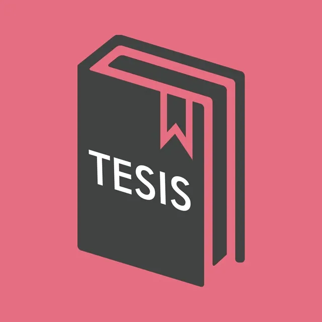
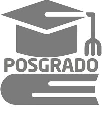

Formas de titulación ICO
Tesis
|
Esta modalidad de titulación está dirigida a la comunidad egresada que se encuentra interesada en realizar una investigación pura, básica, teórica, práctica, o aplicada; empleando una rigurosa metodología científica. |
Examen general de conocimientos |
Esta modalidad está dirigida a la comunidad egresada que demuestre, mediante un examen, que domina los conocimientos actualizados de la licenciatura. |
Alto nivel academico |
Esta modalidad de titulación está dirigida a la comunidad egresada que acreditó todas sus asignaturas de forma sobresaliente, con promedio mínimo de 9.5, en la primera inscripción y sin ningún recursamiento. |
Estudios de posgrado
|
Esta modalidad está dirigida a la comunidad egresada que haya cubierto al menos un semestre en alguno de los programas de posgrado de la UNAM autorizados, con una calificación mínima de ocho en cada una de sus actividades. |
Memoria de desempeño de servicio social |
Para la comunidad egresada que haya realizado su Servicio Social, después de haber acreditado todas las asignaturas de la licenciatura y si implica la práctica profesional. |
Actividad de investigación |
Esta modalidad tiene por objetivo incorporar a la comunidad estudiantil y egresada en proyectos de investigación, garantizar el uso de los conocimientos adquiridos durante la licenciatura y adentrarlas en el campo de su profesión; propiciando el desarrollo de ideas innovadoras a favor de la sociedad en general. |
Actividad de apoyo a la docencia |
Esta modalidad tiene por objetivo valorar en conjunto los conocimientos generales de la comunidad egresada; demostrar su capacidad para aplicar los conocimientos adquiridos y su criterio profesional, y mejorar el proceso de enseñanza-aprendizaje de la comunidad estudiantil y favorecer la mejora continua del plan de estudios de la carrera en cuestión. |
Trabajo profesional |
Esta modalidad se dirige a la comunidad egresada que se encuentre aplicando sus conocimientos de la licenciatura en una actividad profesional y que posea criterio profesional. |
Cursos de diplomados de actualización y capacitación profecional |
Esta modalidad está dirigida a la comunidad egresada que desee actualizarse en temas de vanguardia, mediante varios cursos o diplomados que sumen un mínimo de 240 horas aprobados por el Comité de Carrera de Ingeniería en Computación. |